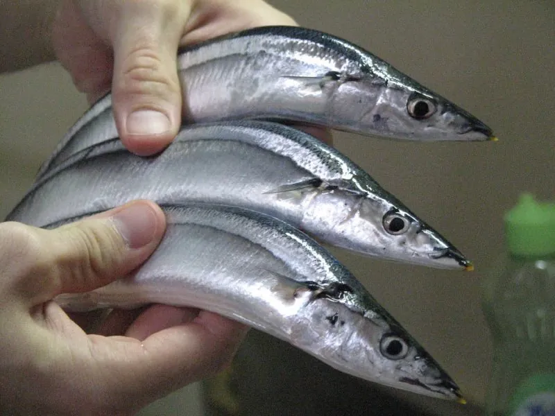

鱼类 · 动物界
秋刀鱼 Cololabis saira

秋季洄游到日本近海的小型大洋性鱼类，体形细长如刀、吻部尖，肉味鲜美，是东亚秋季的代表性渔获和烧烤食材。
- 分类
- 门脊索动物门纲硬骨鱼纲目颌针鱼目科秋刀鱼科属秋刀鱼属
- 栖息环境
- 西北太平洋的温带大洋性上层水域，随季节南北洄游
- 地理分布
- 西北太平洋，包括日本、俄罗斯远东、朝鲜半岛和中国黄海、东海
- 保护级别
- 暂无评估；中国未列入国家重点保护野生动物名录（重要渔业资源）
物种志
秋刀鱼体呈细长的纺锤形，吻部尖，口小。体色背部深蓝或青绿，腹部银白，体侧中部泛着蓝银色的光泽；背鳍和臀鳍后方各有一列小离鳍，尾鳍深叉。成鱼体长一般 25–35 cm，最大约 40 cm，体重通常 100–200 g。
秋刀鱼分布于西北太平洋，从日本、俄罗斯远东、朝鲜半岛到中国黄海和东海，是季节性洄游鱼类。秋季水温下降时，它向南洄游，此时鱼体脂肪含量高，味道最肥美，因此得名“秋刀鱼”。秋刀鱼主食浮游甲壳类如桡足类和磷虾，也吃小鱼；繁殖期在冬季至春季，在洋流交汇区产卵，卵带有黏丝，会黏附在漂浮物上。秋刀鱼是日本、韩国和中国台湾地区重要的渔业资源，也是东亚秋季的传统食物，最常见的做法是盐烤。近年其资源量受海温变化和捕捞压力影响，出现明显波动，相关国家已开始协商管理措施。目前它没有IUCN 的正式评估，中国未将其列入国家重点保护野生动物名录。
形态与习性
- 食性主食桡足类、磷虾等浮游甲壳类，也吃小鱼
- 体长一般 25–35 cm，最大约 40 cm
- 体重通常 100–200 g
- 洄游秋季水温下降时向南洄游，脂肪含量最高
- 繁殖冬季至春季产卵，卵带黏丝，黏附在漂浮物上
- 渔业日本、韩国和中国台湾地区的重要渔业资源
趣味知识
- 秋刀鱼在秋季南下洄游时最肥美，因此得名“秋刀鱼”。
- 它体形细长如刀，是日本秋季最具代表性的季节性食材。
- 秋刀鱼的卵带有黏丝，会黏在漂浮物上孵化。